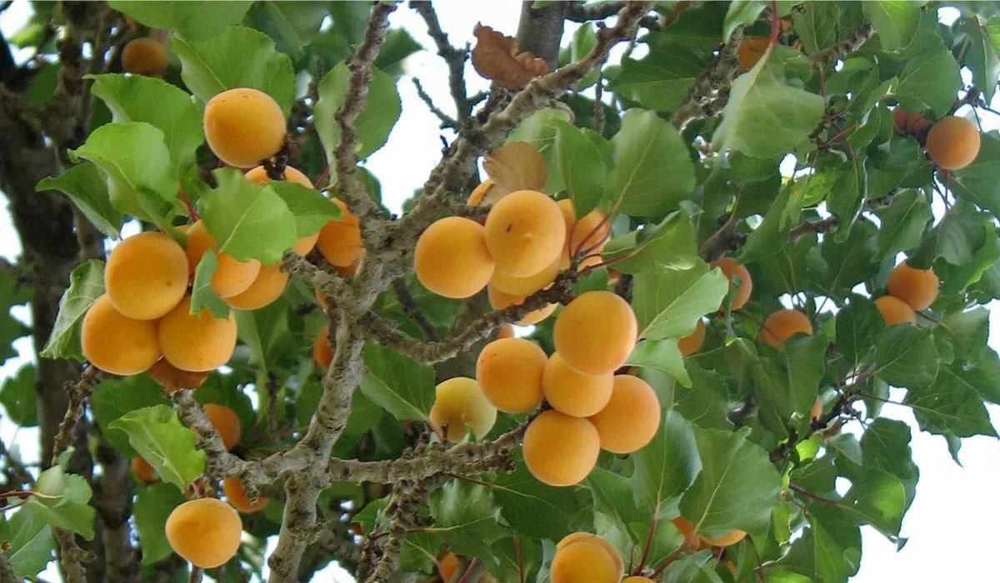
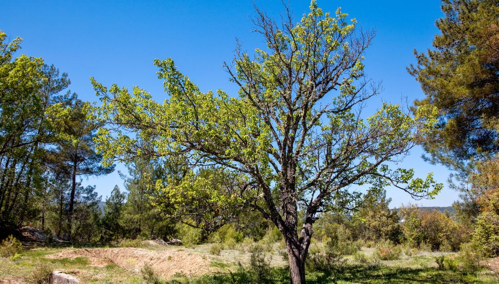
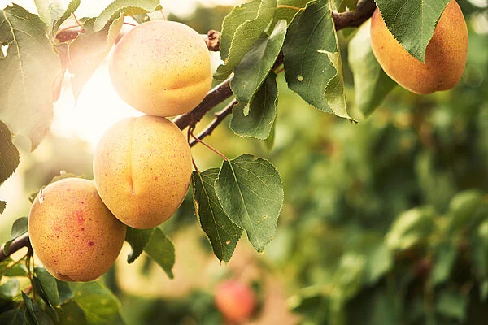
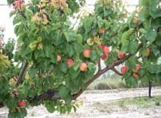

Árbol de Chabacano
El árbol de chabacano es un árbol frutal que crece en climas templados y produce frutos dulces y nutritivos.





Tiempo de crecimiento: 3 a 4 años.
Clima ideal: Templado.
Cuidados: Riego moderado, sol directo, poda anual y suelo bien drenado.
Importancia: Produce frutos nutritivos y favorece la biodiversidad.
⬅ Regresar